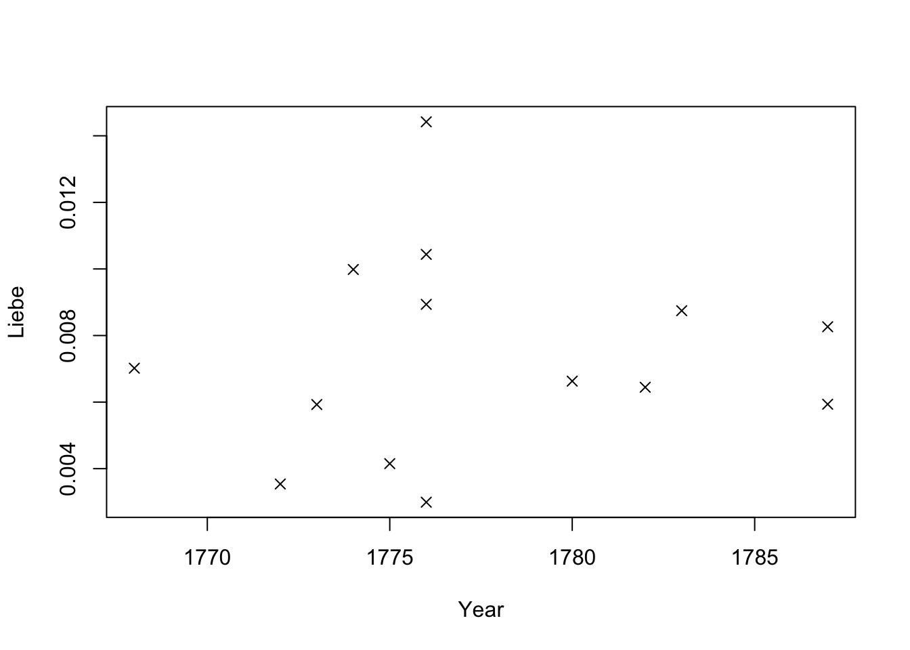

11 Advanced Text Analysis
This chapter contains analyis steps that are advanced. Concretely, this means that they are not as easy to reproduce as the others.
11.1 When are characters mentioned?
The identification of character mentions is not done within the R package, but in the NLP pipeline DramaNLP, and is still in development (the NLP name for this task is coreference resolution. For demo purposes, we have included manually annotated coreferences in this R package. Thus, to reproduce the analyses presented here on new texts, one would need to annotate coreferences manually, for the time being.
When characters are speaking on stage, they are actively present. But they can also be passively present, if other characters refer to them. Both levels of presence can be extracted with the presence() function:
# Load Emilia Galotti
data(rksp.0)
presence(rksp.0)## corpus drama character scenes actives passives presence
## 1 test rksp.0 angelo 43 2 2 0.00000000
## 2 test rksp.0 appiani 43 5 25 -0.46511628
## 3 test rksp.0 battista 43 4 11 -0.16279070
## 4 test rksp.0 camillo_rota 43 1 2 -0.02325581
## 5 test rksp.0 claudia_galotti 43 13 12 0.02325581
## 6 test rksp.0 conti 43 1 4 -0.06976744
## 7 test rksp.0 der_kammerdiener 43 1 2 -0.02325581
## 8 test rksp.0 der_prinz 43 14 26 -0.27906977
## 9 test rksp.0 emilia 43 7 34 -0.62790698
## 10 test rksp.0 marinelli 43 19 23 -0.09302326
## 11 test rksp.0 odoardo 43 12 20 -0.18604651
## 12 test rksp.0 orsina 43 6 16 -0.23255814
## 13 test rksp.0 pirro 43 4 5 -0.02325581As we can see, each character has a few numbers associated: The column actives shows the number of scenes in which the character is actively present. This is equivalent to the information in the configuration matrix. The column passives shows the number of scenes in which a character is mentioned. By default, this excludes the scenes in which they are present themselves, because they can be assumed to be addresses to the character (this behaviour can be changed by adding the parameter passiveOnlyWhenNotActive = TRUE to the call of the presence function).
A simple visualisation that shows the characters active and passive presence in one plot can be generated like this: The first line (plot()) is responsible for the plotting of the symbols, the second line (text()) adds the character names or ids numbers.
pres <- presence(rksp.0) %>%
characterNames(rksp.0)
plot(x=pres$active/pres$scenes,
y=pres$passive/pres$scenes,
xlim=c(0,1),
ylim=c(0,1),
xlab="Active",
ylab="Passive",
sub=dramaNames(rksp.0),
main="Character Presence")
text(x=pres$actives/pres$scenes,
y=pres$passives/pres$scenes,
labels=substr(pres$character,0,20),
pos=3,
cex=0.8)
lines(x=seq(0,0.5,0.1),seq(0,0.5,0.1), lty=3)
lines(x=1:0,y=0:1, lty=2)
In addition to the characters and their position, the plot shows a dashed and a dotted line. The dashed line indicates the maximum for one character. As one scene is either counted towards the active or passive presence, a character cannot have a presence in the top right triangle. The dotted line divides the characters in those that have more active scenes from those that have more passive scenes. As we can see here, almost all characters are placed in the left triangle, which means that their passive presence is higher than their active one. I.e., for each character, there are more scenes in which they are mentioned than scenes in which they speak.
The three characters Marinelli, Emilia, Der Prinz are all relatively close the dashed line. This indicates that they are the most present characters of the play.
11.2 Who mentions whom?
The above analysis shows mentions of characters by all (other) characters. To uncover the social relations in a play, it is of grave interest who talks about whom, i.e., who produces the mentions of Emilia, for instance.
There are multiple ways to represent this visually, of course. To get a general overview of the play, a directed network might be suitable. This will be created in the following.